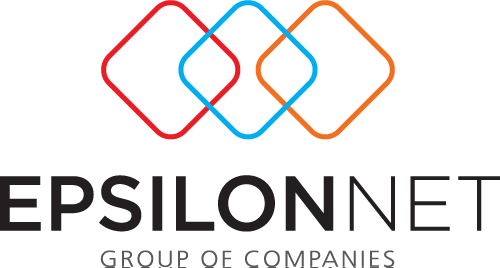

“Ψηφιακά Εργαλεία ΜΜΕ': Έναρξη διαδικασίας έκδοσης επιταγών ( vouchers ) για το Πρόγραμμα

Σήμερα, Δευτέρα 30 Ιανουαρίου 2023, πρόκειται να εκκινήσει σταδιακά η διαδικασία έκδοσης επιταγών (vouchers) από τους δικαιούχους του Προγράμματος Ι “Ψηφιακά Εργαλεία ΜΜΕ” ξεκινώντας από την Κατηγορία 1.
Για την έκδοση των επιταγών του, ο κάθε δικαιούχος θα πρέπει να εισέλθει στον λογαριασμό του (στην Ηλεκτρονική Πλατφόρμα Υποβολής Αίτησης Χρηματοδότησης) και να επιλέξει το πεδίο “Έκδοση & Διαχείριση Επιταγών”, ακολουθώντας προσεκτικά τις οδηγίες που εμφανίζονται στην οθόνη.
Επισημαίνεται ότι:
- Οι δικαιούχοι δύναται να εκδίδουν μία ή περισσότερες επιταγές, με αθροιστική αξία (όλες μαζί) έως το συνολικό εγκεκριμένο ποσό ενίσχυσής τους.
- Η δυνατότητα έκδοσης επιταγών θα είναι ενεργή καθ’ όλη τη διάρκεια του Προγράμματος. Προτείνεται, ως καλή πρακτική, οι δικαιούχοι να εκδίδουν τις επιταγές τους, αφού έχουν επιλέξει προϊόν προς αγορά και γνωρίζουν την αξία τιμολόγησης και αντίστοιχης επιχορήγησης (ανά τιμολόγιο).
- Κατά τις πρώτες ημέρες της έκδοσης των επιταγών, ο χρόνος για την επεξεργασία του αιτήματος αυτού ενδέχεται να υπερβαίνει τις δύο ημέρες.
| ΕΚΠΑΙΔΕΥΣΗ - ΠΙΣΤΟΠΟΙΗΣΗ |
ΠΡΟΤΕΙΝΟΜΕΝΕΣ ΘΕΜΑΤΟΛΟΓΙΕΣ |
| 12 ώρες Δια ζώσης |
Φορολογική και Μηχανογραφημένη Λογιστική |
| 48 σύγχρονη εκπαίδευση |
Digital Marketing |
| 20 ώρες ασύγχρονη εκπαίδευση |
E-commerce Sales και Ηospitality Μarketing |
|
Στέλεχος Logistics / Εφοδιαστικής Αλυσίδας |
|
Βασικές Ψηφιακές Δεξιότητες Office 2016 – Win.10 |
|
Περιήγηση, αναζήτηση και επιλογή δεδομένων, πληροφοριών και ψηφιακού περιεχομένου |
|
Αναλυτής Μεγάλων Δεδομένων (Big Data) |
|
|
Επιλεγμένη Αρθογραφία
- Καταθέσεις εναντίον εταιρικών ομολόγων: Πλεονεκτήματα και μειονεκτήματα
- Ας θυμηθούμε για λίγο την επιστρεπτέα προκαταβολή
- Η αντιμετώπιση της ανάκτησης της φορολόγησης των διανεμόμενων ποσών από κέρδη για τα οποία δεν έχει καταβληθεί φόρος εισοδήματος πρέπει να είναι απλή και ευέλικτη
- Ο δρόμος είναι μακρύς και ξεκινά από τις βεβαιώσεις αποδοχών και τις παροχές σε είδος
- Αυξήσεις για έναν στους δυο μισθωτούς φέρνει ο νέος κατώτατος – Το στοίχημα της διάχυσης των αυξήσεων